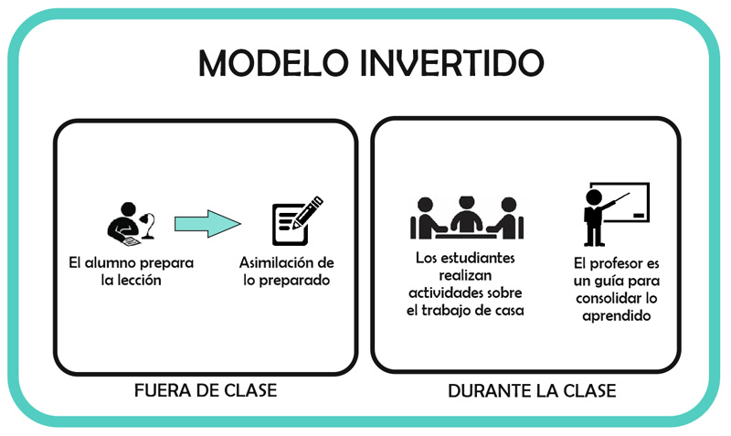

A lo largo de este primer módulo, mediante el repaso de las distintas categorías gramaticales existentes en castellano, se proporciona un ejemplo de clase susceptible de ser llevada a la práctica con vuestros alumnos, para que la tengáis como referente en lo que respecta al resto de módulos del curso, haciendo uso de un pedagogía innovadora como es el Flipped Classroom o Aula invertida.

Sin embargo, antes de ponernos manos a la obra, considero interesante tener presente, en el momento en el que planifiquemos nuestra clase la consideración, de Daniel del Amo, al diferenciar los distintos niveles, fases y tiempos que conforman todo análisis de aprendizaje:
NIVEL I: EXPLICAR
- Fase: Visualización de los datos.
- Tiempo Presente y Pasado.
- Responde a la pregunta: ¿Qué ha pasado? y ¿Qué está pasando?
NIVEL II: DIAGNOSTICAR
- Fase: Análisis de las visualizaciones.
- Tiempos: Presente y Pasado.
- Responde a las preguntas: ¿Cómo y por qué pasó? y ¿Cómo y por qué está pasando?
NIVEL III: PREDECIR
- Fase: Interpretación del análisis.
- Tiempo: Futuro
- Responde a la pregunta: ¿Qué puede pasar?
NIVEL IV: PRESCRIBIR
- Fase: Interpretación de las predicciones o análisis
- Tiempos: Presente y Futuro.
- Responde a las preguntas: ¿Cómo podemos actuar? y ¿Cómo prevenir lo negativo y potenciar lo positivo?
Repaso de la categorías gramaticales
Adentrarnos en el mundo de la Sintaxis exige, como punto de partida por parte de nuestro alumnado, el dominio y manejo de las distintas categorías gramaticales existentes en castellano, de ahí que ciertos profesores prefieran hablar más de "Morfosintaxis" que de "Sintaxis". Y es que, en ocasiones, de forma involuntaria comenzamos hablar de sintagmas, funciones sintácticas, etc. sin haber abordado con anterioridad las categorías gramaticales.